来源：https://uuy7p3hra0.feishu.cn/docx/VAA8dQLTZolMlJx1jxrcKaPrnzd
大家好，我叫阿may
现任智能洗车领跑者车海洋CGO、私域裂变工具伙伴猫CEO，常驻广州，90年出生于广东湛江，毕业于华南师范大学（物理学），从事互联网营销10年，创业5年
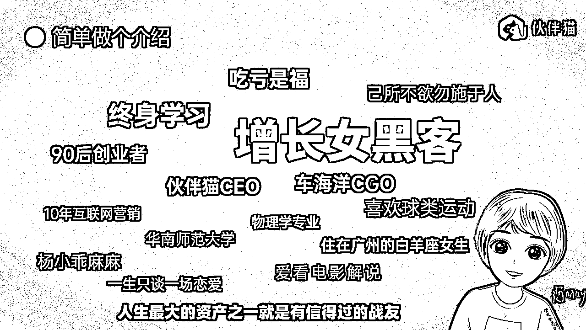
我是生财四年的圈友，写了11篇精华稿，靠9颗龙珠变现了10万元，当我要了解一个新项目或者要学习一些新的营销玩法时，我常常会用生财有术的精华帖搜索相关内容，总是很快就能找到答案
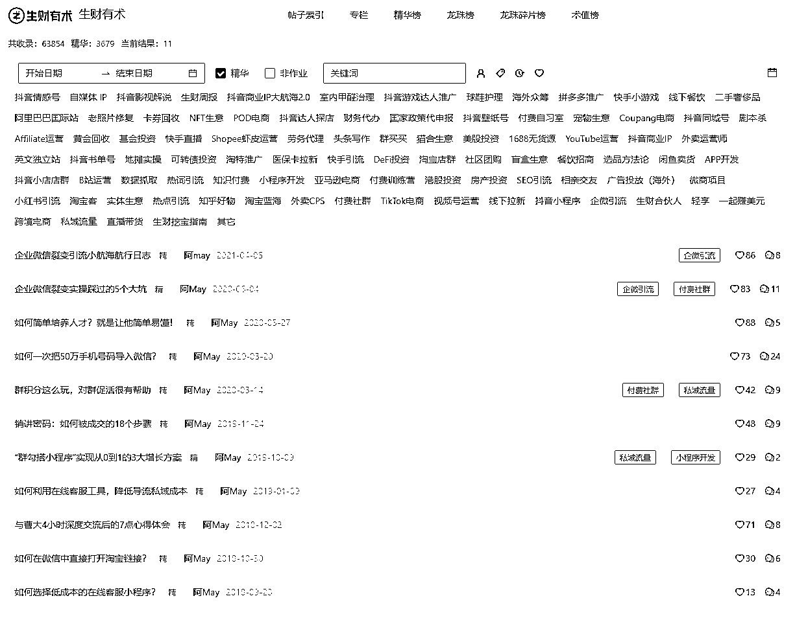
因此，我真的非常感谢亦仁，也非常感谢生财有术，也累计安利了将近200位好友加入生财有术
我研究互联网营销已有10年，经历过贴吧、seo等搜索营销时代，也亲自操盘过了公众号营销、朋友圈营销、社群营销的微信营销时代，现在更是亲自下场做抖音等短视频营销玩法，基于我个人前后操盘6个项目、陪跑12个企业、辅导培训上万个学员的经历，给大家分享一些我关于品牌起盘阶段的流量玩法思考
今天我的分享主题是：如何结合私域裂变和个人品牌，搞定流量难题
主要是从以下三个部分展开分享：
一、重新理解微信好友
二、无资源无资本，如何从0开始积攒第一批客户
三、如何通过撬动10个铁杆粉丝获取1000个客户
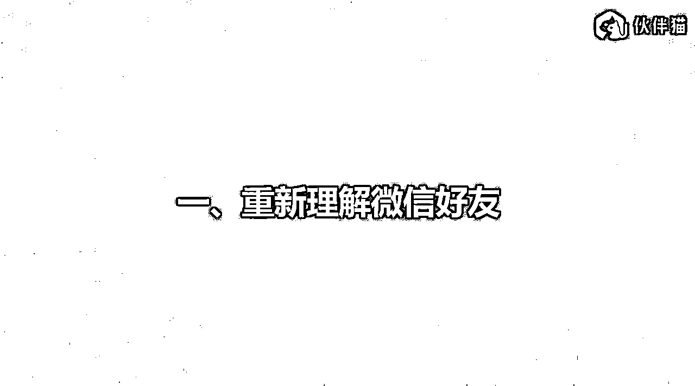
如果要1年赚100万，如何做得到？
有人说找到1万个客户，买100元的产品
有人说找到100个客户，每个产生1万利润
有人说成交1000个客户，买他们100元的产品，再成交他们10次
有人说做梦吧……
你有想过这个问题吗？你有想过其实，自己真的有机会年入百万吗？
你有想过这个问题吗？你有想过其实，自己真的有机会年入百万吗？
其实，年入百万，很难，但也不是不能实现的。但是起码你要先有这样的目标，有了目标后，再去找实现的方法，也许就能实现了呢。
计算销售额有条公式：销售额=客户数×客单价×购买频次
按照第一个方案来，你得找到1万个客户，如果你的成交转化率是30%（已经很高了吧？），那起码你得获取到3.34万新客户，那相当于每天获取到91个新客户，你就有机会实现营收百万。
按照第二个方案，你得找到100个客户，那就相当于4天成交一个客户，你就有机会实现。
……
按照这样计算下来，是不是觉得，天呐，我太缺流量了，赶紧去搞流量去！
实际上，以往的我们，都太过关注客户数这个指标了，而大大忽略了客单价和购买频次，根据销售额公式可以看到，购买频次和客户数、客单价一样重要！
你知道吗？企业营收也有28原则，20%的客户给你带来80%的利润，复购比拉新更重要！
找到1万个客户多难呀，你得不断拉新培育成交，但是找到100个客户就容易得多了。只要搞定100个愿意在10个月里每个月给你支付1000元的客户，你的年入百万就实现了！
分享大家2组数据，第一组数据，在418推广生财有术时，我公司共有微信好友4万人，我的微信好友有3万人，基本都是私域增长从业者相关，但是我的微信可以转化80人，我公司的资源却只能转化20人，数量上我公司的资源其实更多，但是成交上我的好友却是公司资源的4倍！
第二组数据，我有一个朋友，他只有800个微信好友，每个月却能成交超过20万元，另外还有一个朋友，微信好友有3万人，但是每个月仅能成交5万元，在好友数量是前者将近40倍的情况下，成交额却不足别人的四分之一！
这两组数据，不知道大家看到了什么？
这也是我今年来最大的转变之一，有信任度、有粘性的好友，远胜过泛泛之交。
所以，我今年开始关注线下活动，关注线下的关系建立，今年我来到广州，只做了4场增长饭局，深入沟通了接近50人，就已经创造出了30万的业绩！
而且因为对用户的深入沟通和了解，我们还搭建出了更多合作方式，从以往客单价几千块，到了现在客单价10万。
我之前在操盘群勾搭项目的时候，就踩过一个大坑，那就是只设置引流产品的价格，后面没有高客单价产品来做承接。实际上，只要你成交一个客户，他就有机会给你复购。所以如果你只有一个sku，相当于你把复购的机会直接砍掉了。
所以，一定一定要设计一个高客单价产品，这样可以大幅度增加你的利润。而且有个高客单价产品在那里，就相当于是你的站台产品，一下子拉高你的品牌力。
重新去梳理下自己的产品结构吧，看看是否可以设置客单价更高的产品？是否可以增加客户复购的产品？
然后，沉下心来，去深度了解你的用户，而不是天天只想着批量成交！
私域的本质，是长远而忠诚的客户关系！
什么样的关系才能长远而忠诚？
不是只有用户了解你，而是我们彼此了解！
把用户当朋友，关系才能更紧密！
我的增长饭局，为何现场满意度那么高？
就是因为我抱着纯利他的心态，给每一个来到现场的朋友，想办法解决他们的流量难题
更有不少朋友，因为看了我们增长饭局的流程，也引发了自己做饭局的想法
相互彼此互为客户，更能长久
有了上面关于私域好友的认知，你就会发现，实际上，我们真的没有那么缺流量，我们缺的是深度沟通、精准的客户而已。
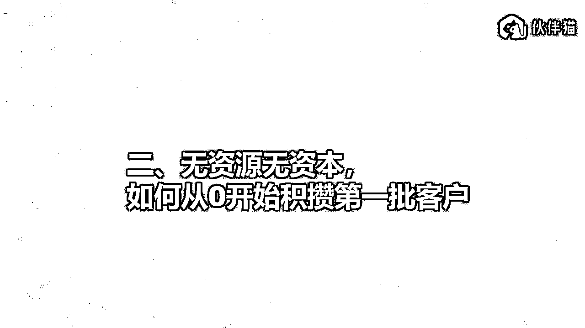
那么，在我们无资源、无资本的情况下，如何从0开始积攒到我们第一批客户呢？
前几天我重看小马宋老师的书《朋友圈的尖子生》，里面有一个篇章是讲李倩老师的。
小马宋老师在跟李倩采访的时候，李倩老师是在青山资本做天使投资，小马宋就很疑惑，现在李倩既然在做天使投资，为什么又开始强化自己在营销上的认知，强化自己在品牌营销上的个人标签呢？
李倩老师是这么说的：
这是一个个人品牌差异化的打造方法。因为她属于投资圈里的后进生，那怎么才能成为这个圈子里的尖子生呢？她就观察到，这个行业里面，投资人最重要的资产其实是流量。
因为投资人手里都有钱，但是好的项目很少，那么当你遇到一个真正好的项目，为什么别人要选你呢？那肯定是由于你有其他的优势。
而李倩老师认为投资圈最大的区别就是流量的差别，也就是说当一个创业者在选择投资人的时候，他会看中你到底在哪方面给到他实质的帮助。
所以她就要强化她在品牌营销上的标签，这样一来，她就是营销圈里最懂投资的，是投资圈里最懂品牌营销的，这就是一种差异化的身份。
这种差异化的身份可以帮助到她获得流量。而且这种获得流量的方式其实是几何倍数的速度。
而她相比于其他投资人，能给创业者带来的差异化的服务，就是可以在中国提供最好最顶级，最详细最妥帖的品牌服务，这样一来就给了创业者一个理由，选他们。
你看拥有个人品牌是不是就拥有了流量？的确如此，我在做增长女黑客之前，我的微信好友只有区区200多人，想要去找工作，恐怕还要去招聘平台投简历，但是当我做了增长女黑客这个个人标签之后，就有很多牛人大咖开始找到我，给我介绍各种项目、资源。
一方面个人品牌给我带来了流量，另一方面个人品牌也帮我在与人交往的过程中，快速建立了信任。
我认为，垂直行业的专家也将会是普通人，做个人品牌最好的切入口！也是我们普通人起盘最好的切入口！
那么，当你找好了你的个人定位之后，怎么才能积累到你的第一拨客户呢？
最近就有个生财的朋友找到我，提到了一个问题，就是他现在是有稳定的内容输出 ，但是没有破圈，都是朋友支持，所以想要开一个付费的知识星球，但是不知道如何给知识星球创建粉丝？
咱们群里不知道是否也有遇到此类问题的朋友？
当你有内容时，如果一直只是在自己的朋友圈发布，没有向外界拓展，而你的内容又还没有到达朋友看到后想要帮你分享转发的情况时，要想拓展新用户，真的很难。
不仅仅是做内容的朋友，做产品或者其他服务的朋友也是如此，如果你仅仅是在你的圈子里发布你在做这样那样的服务或者产品，是不是很难获取新客户？
这种情况，怎么办呢？
这其实就是冷启动的问题了。
没有流量，那就去借流量。
可以去哪里借？我认为非常有效的是以下三个地方
例如把内容发布到视频号、公众号、知乎、小红书、抖音、快手、B站等自带流量的平台上，还有一些行业的网站、自媒体平台等等，这些平台自带流量，只要你的内容足够好，就会吸引到目标用户关注你。
你还可以把内容换成多种形式去表达，从图文形式到音频、视频、图片不等，可以换不同的花样去发布。
我有些文章，发布到自己的公众号，只有一两千的阅读，但是发布到人人都是产品经理的网站上，却有几万的阅读，而我在那里发布内容，其实很简单，就是把我公众号的内容，复制过去，稍微修改一下即可。
好的内容，平台是非常欢迎的。
所以，如果我们没有资源没有资本，学会做内容营销，学会写作、拍摄短视频，就是我们能够拿到流量的基本功。
在这里我给大家推荐一个非常好用的内容营销方式，就是知识营销。以前你可能去打广告，就是去推硬广，但是现在呢，比较流行的是什么？去推广你这个产品的知识，通过知识吸引到你的精准客户。
尤其是那些需要长时间去做决策才能下单购买的产品，比如说车啊，房啊，还有家具啊，或者说高价的产品啊。你最好的营销方式是什么？就是影响他，培育他，让他在决策过程当中接触到你的专业度，当他信任你了，订单就自然来了。 另外呢，对于短时间决策产品，也会有一些产品比较适合用知识营销这种方式。比如说日化产品啊，食品啊，服装啊，美妆啊，也经常用知识产品去做转化的。
传统销售是主动销售，就是发硬广，直接就是业务介绍，这种情况一般会被大家厌恶，而知识营销是被动引流，他们会把自己的营销内容化，变成“分享”、变成“硬核干货”， 就连他们的自我介绍都不放过，都要变成吸引的钩子。只要内容是真的有价值的， 是名副其实的，我们都是欢迎的，喜爱的。
我有写过一系列关于如何做知识营销的内容，大家有时间的话，可以前往看看：
阿may：这套获客方法厉害了！客户源源不断疯狂找上门来！（1）https://mp.weixin.qq.com/s/HO4-bpMD5rRvLwTrofzaZg
阿may：如何把别人的客户变成自己的客户？这4步精准引流法，超有效！（2）https://mp.weixin.qq.com/s/5RosiRRC9KjuE5YYF61EGw
阿may：如何快速出一系列的获客问答文章？我有绝招！（3）https://mp.weixin.qq.com/s/1TppSAHVv9Z0XybfOGLQ1g
阿may：我身边的畅销课大牛，都在用的一套做课方法！（4）https://mp.weixin.qq.com/s/2zFrIHIb5D2N4TZa20nXEQ
这个系列内容还在更新中，后续有机会再跟大家分享。
但是，做内容营销，其实很考验人的能力，所以如果你没有那么热爱做内容，其实做内容营销这条路对你来说，会很难。
那么，还有没有其他办法？
有！
我认为，普通人做个人IP最好的起盘方式，不是去做抖音、小红书、知乎、公众号等，而是扎扎实实地做好社群的群红
为什么这么说？
因为抖音这种公域平台，是算法机制，是筛选机制，通过这种机制，平台只会筛选出最聪明最勤奋的创作者出来，为平台奉献好的内容~
如果我们只是去做公域，说实话，我们面临的竞争是无限竞争，有太多人跟你竞争了，你太难走出一片天，除非你非常敏锐，找到了市场空白点，别人没有做，或者你的竞争对手没有涉及，你才会抢得先机，、获得一段时间的增长红利，没错！是一段时间！
因为做好公域平台的人，都太会调研了，太会研究数据了，一旦你测试这种内容模式成功，就有一大批人去复制你的内容模式，去研究怎么变成自己的
所以你只能获得一段时间的增长红利，如果你没有好的创新，或者在之前的这段时间红利里你没有积累下用户信任、规模优势，那么你就很容易被别人赶超，淹没在人海当中……
这种案例我们见得太多了，有多少人在抖音上爆红过，但是大浪淘沙，又有多少人能够长红？
更不用说，作为普通人的我们，没资源、没资本、能力一般、才艺一般……我们凭什么能够在众多的创作者中走出自己的优势？
而做好社群的群红不一样，社群的群红是有限竞争！
如果你在的是一个线下社群场域，通常你面对的社群成员只有十几个、几十个，最多也就几百个、几千个，你完全有机会在这几十个人中展示你的特点和标签，让大家记住你。
所以，不要一开始就把自己定位要去做“网红”，而是想办法让自己变成“群红”！
在一个几百人的社群里做出名气，让大家认识你，让大家信任你，你就很容易在这几百人中获得铁杆粉丝，转而跟你合作、购买你的产品……
其实我自己的个人品牌起盘模式就是如此，我就是先把自己的经典案例做出来，然后去复盘我的案例，加入了很多付费社群，想办法在社群里做出奉献，把我的案例分享给大家，让大家通过案例来认识我，就是这样，我得到了生财有术、混沌等社群的推荐，从而获得了很多来自于这些社群的成员认可和信任
也是因为如此，我也非常感恩于这些社群的组织者，也经常跟大家推荐这些社群……很多事情，都是相互的
我身边很多人，也都是通过这种方式把自己的个人名牌做出知名度的
这种模式，很好复制，比去做抖音，要容易复制多了
所以，我才说，普通人做个人IP最好的起盘方式，不是去做抖音、小红书、知乎、公众号等，而是扎扎实实地做好社群的群红！
那么，怎么才能找到我们目标客户所在的社群呢？我之前还写过一篇文章，讲过如何寻找目标客户所在的社群的，大家可以看看：https://mp.weixin.qq.com/s/YqUc8g83Jx4hUa_AdBm_Tg
但是有很多人虽然知道方法，却总是不知道怎么执行。
这里面最大的问题，其实出在自己根本不知道目标客户是谁
例如像我提问的这个朋友，我问他，你的目标客户是谁，他说他的目标人群有两类 一类是艺术爱好者 潜在的购买客户 一类是艺术创作者
这种就是明显分不清楚自己目标客户是谁
为什么这么说呢？
因为艺术爱好者和艺术创作者，这两个分类都太泛了
你通过这两个关键词，是根本找不到社群的
没有人这么命名社群！
那么可以如何细分呢？
例如，把艺术细分下来，例如分为绘画、音乐、摄影等等，哪怕分到绘画、音乐这一层，还是不够的，还可以继续细分，例如绘画可以分为素描、油画等等，音乐可以分为钢琴、吉他等等
当细分到素描、吉他这一层时，你就会发现，再去寻找这样的社群，就容易多了！
明确目标人群，是做销售、做推广的前提！
分析自己的目标客户是谁，值得我们花时间去细细研究的
说到这里，有人跟我说了，阿may，我也加了很多社群，但是我并没有获取很多流量，怎么办？
那就说到第三种方法了！
我的投资人是《裂变式创业》的作者宗毅，他一直说“人生不要只靠自己傻傻奋斗，一定要有老师，一定要有贵人，否则没有任何机会成功，这句话送给所有奋斗中的同学们“
是的，我们虽然平凡，但是我们如果能够与牛人为伍，得高人指路，获贵人相助，那么我们也可以成为不平凡的一员！
那么如何抱大腿呢？
在这个方面，秋叶大叔是我学习的榜样，我是从2015年关注秋叶大叔的，我发现，秋叶大叔的主动抱大腿的意识是非常强的。
他也曾在多个场合公开说过，他要是发现比他强或者和他互补的资源，他就想着赶紧勾搭一下，看看能不能一起整合推广搞事情。
例如最近我看了他在16年的一篇文章分享，他就提到两个人：
一个是阿文，他当初发现了阿文做PPT的能力很强，大叔自己也是做PPT的，按道理来说，两人是竞品了都，但是大叔的第一反应是赶紧勾搭，所以就找到了阿文跟他合作，一起做ppt课程，后面变成了他的事业合伙人。
一个是阿何，他看到阿何运营职场充电宝，公众号涨粉飞速，所以他就赶紧去勾搭，跟阿何链接（阿何老师就是影响我做个人品牌的老师）
到现在，秋叶大叔抱过的大腿很多，不仅仅是这些比他强的人，还有名人，有资源的企业等等，例如百度文库、百度云、新浪微博、新浪微盘、微软Office、金山WPS、锐普PPT、PPT美化大师、网易云课堂、网易有道笔记、腾讯、微信、罗辑思维等等，都曾经被秋叶大叔抱过大腿……
那我们应该抱到什么样的大腿呢？我认为有两个层面：
1、要抱行业的大腿 （站对风口）
2、要抱行业里有影响力的人的大腿（找准贵人）
那么，怎么才能抱到大腿呢？
抱大腿不能靠钱去换，因为大腿不缺钱，像宗大，要说用钱去跟他勾搭，还真的是不行，宗大身家都不知道是我的多少倍，我就算拿出我的全副身家，也不足他的百分之一。
那么，靠什么去交换呢？
你要去创造资源、创造价值！
对于普通人的我们来说，练好一身本领，就是最好的方式！
正所谓“你不牛逼，认识在再多牛逼的人也与你无关”，抱大腿一定要提供可交换的价值，想想自己有没有可交换的个人核心能力或者资源？
像宗大之所以愿意投资我，就是看中了我在私域营销的特长，加上人品等各方面，他觉得靠谱有潜能，才会愿意投资我，甚至帮我各方面去背书的。
我做10年互联网营销，这几年一直在研究用户增长，深钻一处，就是为了可以把自己的本领练得更好，如果没有这一身本领作为护身符，我是没有办法吸引到“大腿“，也很难跟“大腿们”搭上关系的。
只要你有价值，“大腿”也会自然主动来结识你的。
关于如何抱大腿的细节故事，我之前写过一篇文章，大家有兴趣可以看下：
如何让大咖乐意结交你？分享两个与牛人链接的故事：小马宋和罗振宇，我和宗毅
https://mp.weixin.qq.com/s/jN6sHcBDu4PjY0Q4-krzOg
做好以上这三点，我认为，就算你一开始是0资源起盘，也能积累到第一批客户了！
有了第一批客户后，如何做得更大呢？这就是我们接下来要思考的问题。
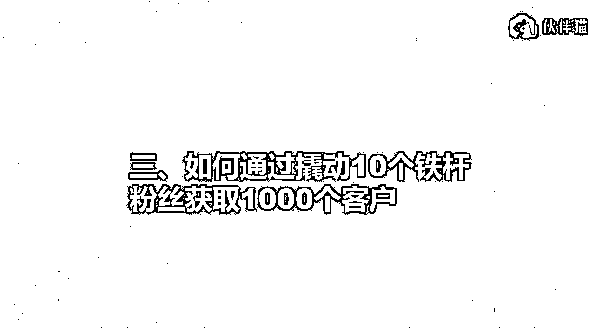
我常常用的方式，是裂变。传统流量红利已尽，获客成本不断上升的今天，裂变确实是最低成本获客的方法之一了。
如果你还在怀疑裂变的威力，给你看下这张图，你就懂了：
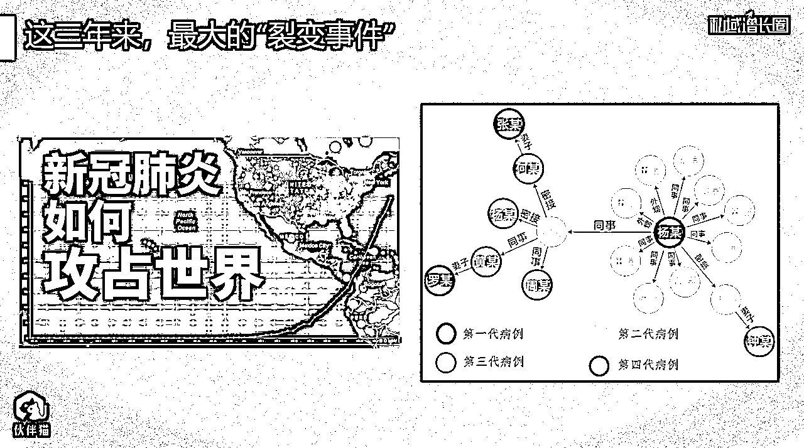
真的做好裂变，威力无穷！
那么怎么做呢？
我之前有开发了一整套的裂变课程，裂变是一整套的方案，很难一下子全部告诉大家。
这里我简单讲一下裂变的大框架内容，让大家掌握底层框架：
在我看来，裂变分为两种模型：
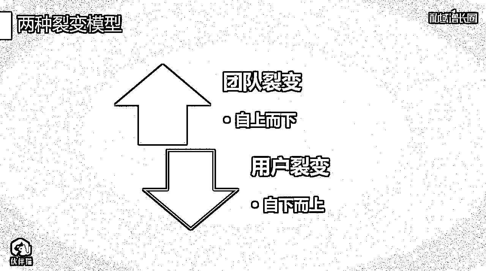
第一种是团队裂变，这是一种自上而下的裂变模型，用一个很牛的段子，大家就可以快速了解到这种模型的魅力了：
一个军团是怎么快速搭起来的？
毛主席找来林彪， 说： 给你个司令当当
林彪问：军队在哪里？
主席微微一笑，说： 去找三个军长来。
林彪心领神会， 向主席敬礼大声说： 保证完成任务！ 林彪回去找到三位军长， 说： 给你们一个军长干干，
三人同问： 军队在哪里?
林彪说： 去找三个师长来！
三人相视一笑， 三双大手有力的握在一起， 然后向林彪敬礼说： 保证完成任务！
3 位军长回去， 各自又找到三个师长， 说： 给你们一个师长干干
九人同问： 部队在哪里？
军长说： 去找三个旅长来！
师长们齐敬礼说： 保证完成任务！
9 位师长回去又各自找到三个旅长！
27 位旅长又各自去找到三个团长！
81 位团长们回去又各自找到三个营长，
243 位营长回去又各自找到三个连长，
729 位连长回去又各自找到三个排长，
2187 位排长回去又各自找到三个班长，
6561 位班长回去又各自找到三个兵……，
很快一个 68890 人的集团军就顺利组建完成了！
看完这个，不知道你会不会会心一笑？这就是团队裂变的模型，这个模型，是有明确清晰的上下级推荐关系的，常见的微商团队、经销商网络、社交电商等玩法，就是靠这种模型搭建起来的
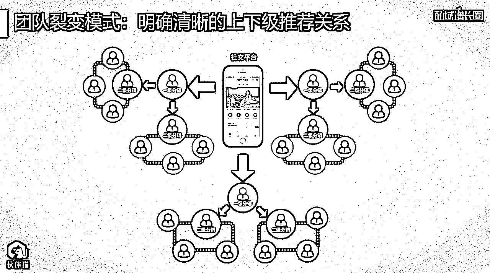
这种模型吸引人们参与的核心关键点，就是诱饵足够大：躺赚逻辑！
只要你做得足够早，你后期就有可能享受躺赚，一个人真的可能带着千军万马！我身边有个朋友，做社群团购，就是因为加入一个社群团购平台足够早，她也给力，很会拉人，现在1个人，月收入100万！没错，是月收入100万，纯利润！！！比市面上大部分100人以上的公司利润还要高！这样的故事说出去，就足够吸引很多人来参与
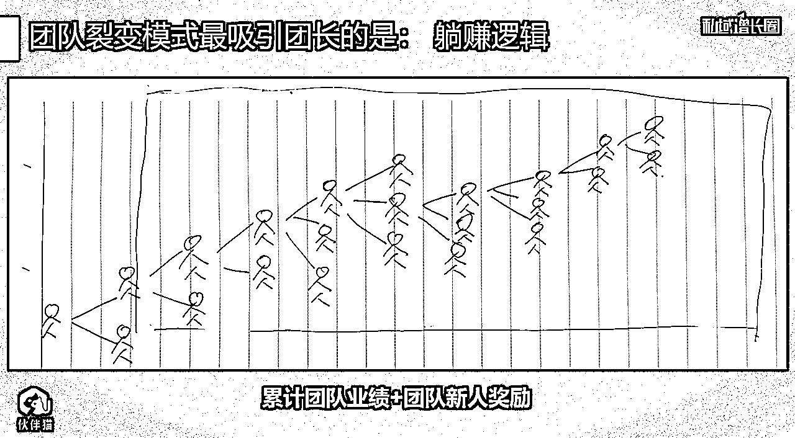
因此，只要设计好机制，保障终端能卖得出去货，靠这种模型，的确可以快速裂变。
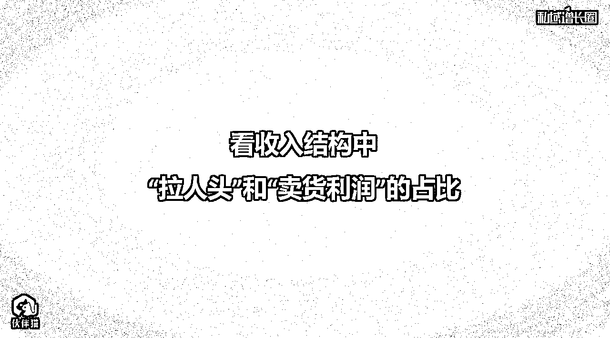
第二种是用户裂变，这是一种自下而上的裂变模型
用户与用户之间是社交网络的状态，ABCD之间有可能相互认识的，彼此关系是网状结构，不是树状结构
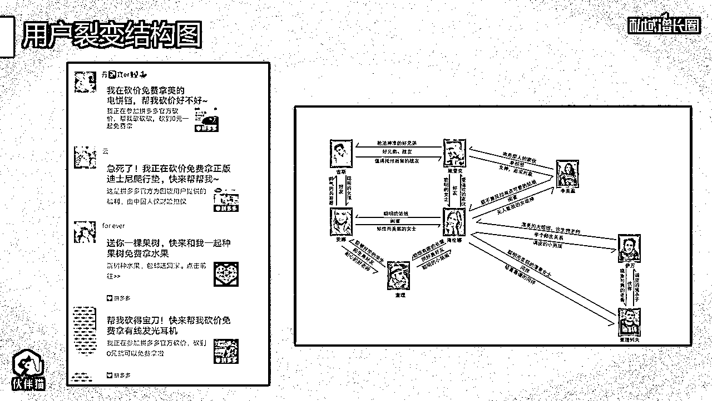
用户裂变讲究的就是圈层效应，所以一般都是针对不同人群去设计不同的裂变玩法
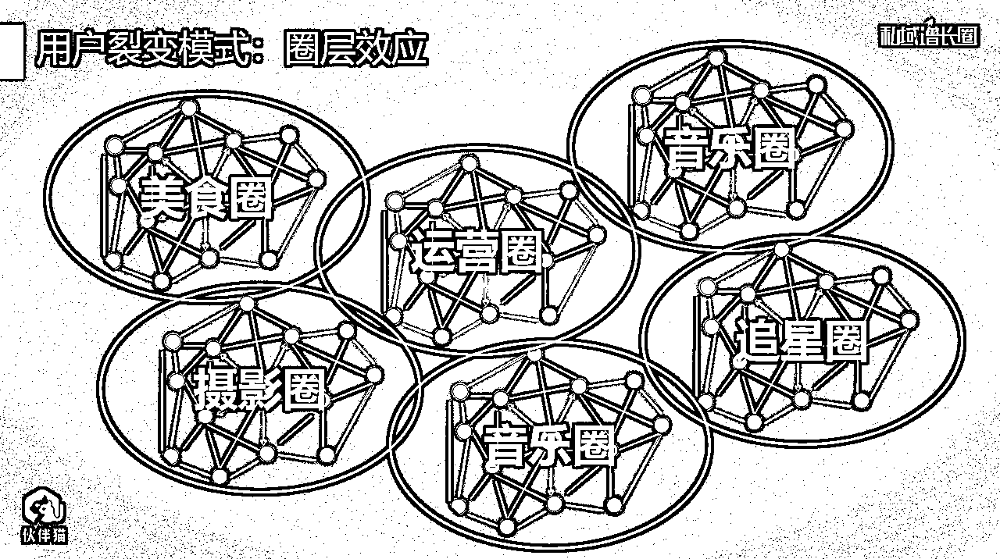
我研究用户裂变已有5年多，在我看来，用户裂变有两种形式：
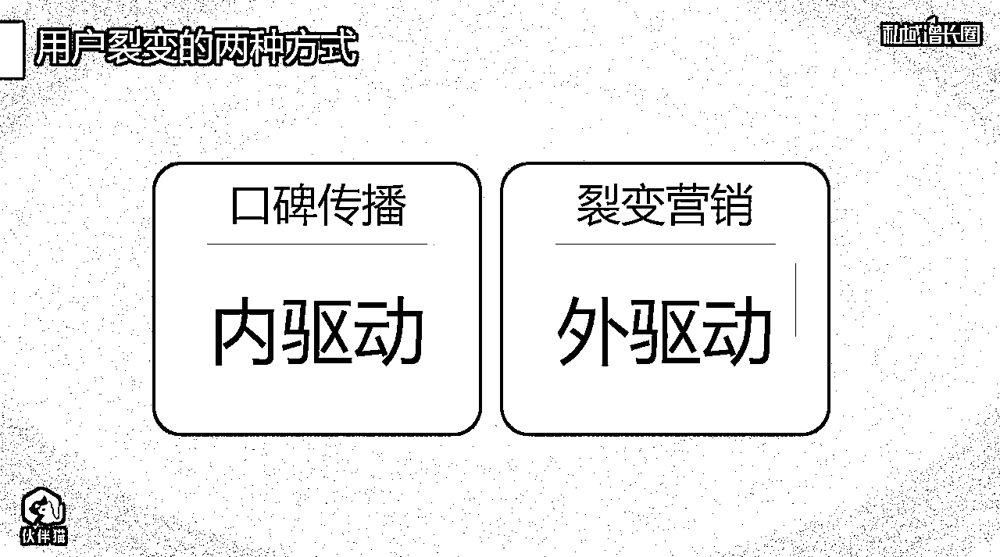
口碑传播，就是用户没有基于任何利益诱惑的前提下，就愿意帮你分享和传播！
那么，怎么才能让用户帮忙做口碑传播呢？推荐大家看一下一本书——《疯传》，里面提到的六大原则，我觉得总结得非常好：
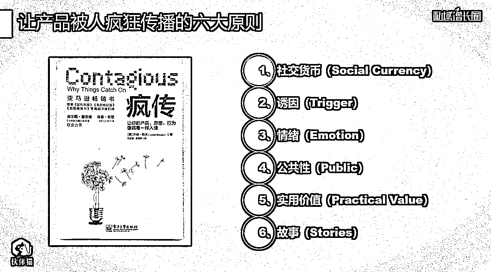
书籍因为翻译不太好，有些晦涩难读，樊登有解读过这本书，我还曾经带领过我们的社群伙伴，一起共读过这本书，大家有需要可以扫码看下（密码是666666）
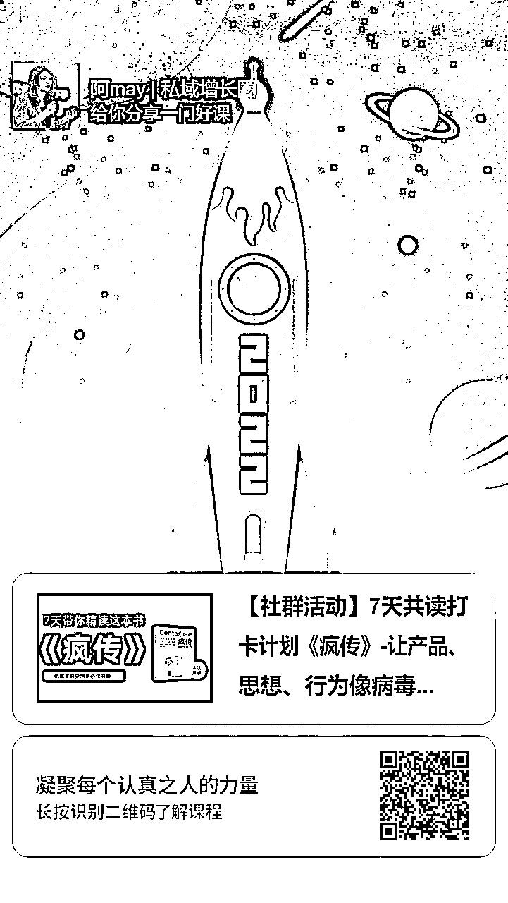
除了口碑传播之外，我们还可以用到的一种裂变形式，那就是举办裂变营销活动，通过利益诱饵的方式，促进我们的员工/渠道/老顾客帮我们分享。
例如，在做活动的时候，我们可以去设置这样的一个环节：加微信的用户，我会设置一个他会感兴趣的福利，如果他愿意分享到朋友圈的话，我就会免费把这个福利送给他，但我不会强迫他帮我分享。
当然，这里的福利一定是对用户有价值的东西，他才会愿意分享，否则就算你做了分享的引导，也是无效的。
比如说我们现在给大家分享的这个时间捐赠社群，如果亦仁开放给大家，支持大家分享给朋友的话，我想，肯定很多人愿意去分享，尤其当你觉得我们的分享都很有价值的时候，因为你会觉得这样的社群对你朋友是有帮助的。
一般来说，设计裂变营销活动的话，我们主要是围绕着以下三种裂变机制来开展的：
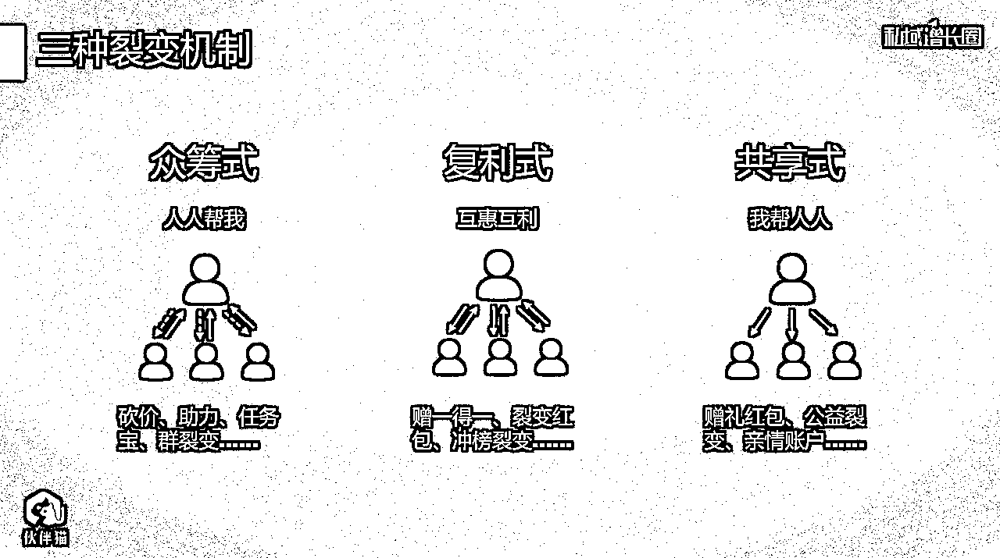
针对不同的裂变机制，也有不同的裂变路径，因为我公司就是做裂变工具的，所以我们也开发了不少裂变玩法，我们目前最常用的玩法就是基于企业微信的任务宝裂变玩法（我们称之为好友裂变）、赠礼裂变玩法（我们称之为冲榜裂变），基于服务号的分销裂变玩法和赠礼裂变玩法（我们称之为活动裂变）
估计大家多多少少都有见过这样的裂变营销活动
但是，在做裂变营销活动过程中，最重要的是有多少用户真正去行动帮你去做分享
因为，大部分裂变营销活动策划者策划的活动之所以效果不好，往往最大的原因是在于，只有激发层的用户愿意分享，到了第三层裂变层，就断层了。因此就根本裂变不动！
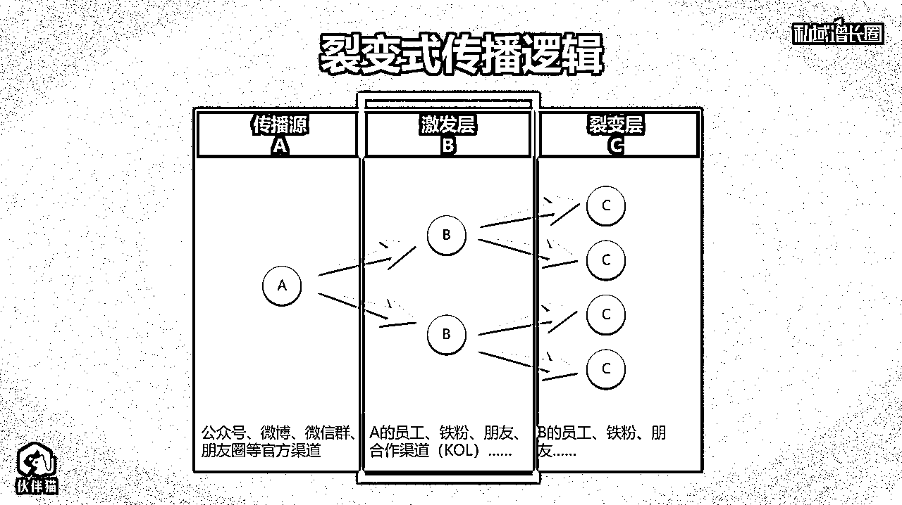
那么，怎么样才能让更多人产生分享行动，并且有持续的分享行动呢？
我们会在用户裂变的营销活动玩法的基础上，还会叠加一层“团队裂变”的玩法，这种玩法我们称之为“战队PK”的玩法，也就是组织中的动销系统。
怎么做呢？我用一个案例，跟大家说下：
最近刘润老师的跨年演讲刷爆了我的朋友圈，就有朋友提到我们去年做的一场跨境电商峰会，刘润老师为此连发几次推文讲到这个峰会《我演讲到一半，警察来了》：
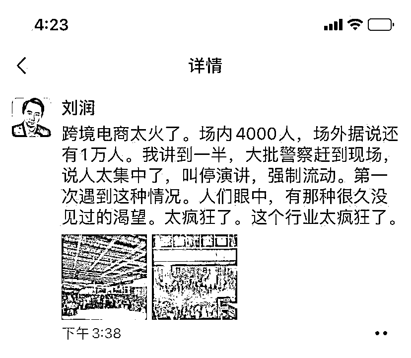
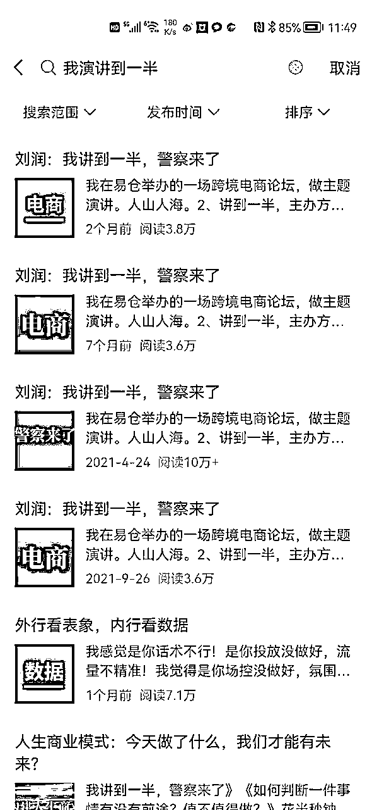
我们是这个峰会的幕后营销服务商，我们在展会开始之前，通过活动裂变+战队PK裂变的方式，我们实现了3天内裂变近6000个用户参加线下活动，加上主办方的助推，最终活动报名人数累积1.8万人，到展会现场的有4000人，由于活动过于火爆，展会进行途中警察赶到现场维护秩序，还有1万人只能在场外听分享；
在展会现场，我们通过精准洞察在场用户需求，我们一小时引流用户5000多人，还使用了冲榜裂变+群裂变的玩法吸引到1000多位新用户进入私域流量池，这个是具体案例的详细复盘拆解文章，大家有时间可以详细看下：
【案例拆解】刘润老师都惊了！3天半如何吸引6000+精准客户参与线下活动（上）
https://mp.weixin.qq.com/s/pYh3EJG9ByVHCkS4vVKI3w
我的人生，就是因为掌握了裂变营销这套玩法，发生了翻天覆地的变化，我真心推荐，每一位想要获取流量的朋友，都学一学裂变营销这种获取流量的方式。
总得来说，如果你目前属于起盘阶段，那么你可以通过做个人品牌，然后结合公域内容引流、社群打造个人影响力、抱大腿借势营销这三种方法，获取第一批客户。
如果你属于发展期，那么可以借助裂变营销这种杠杆营销玩法放大你的流量池。
当然，如果有钱的话，投放是一种更有效率的放大器
总得来说，今天我跟大家分享的起盘阶段用到的方案和放大流量的方案，是我亲自实践验证有效的，并且我也带领了不少学员也用这种方案做出结果的，我所说的路径是可复制的，希望对大家有启发。
今晚的分享就到这里，谢谢各位
这个是今天分享的逐字稿：
对了，我常驻广州，在广州成立了一个私域增长圈社群，给生财的朋友送个社群门票，如果你想要加入的话，可以加下我的个人微信2780671395，免费拉你进群
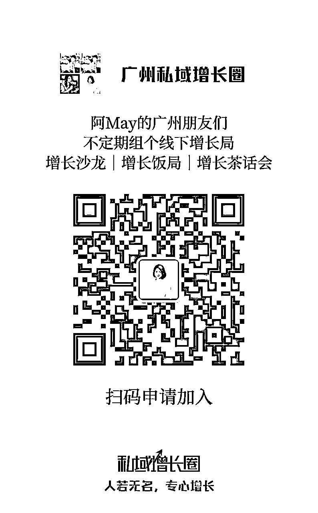
再次谢谢生财的邀请~